측량및지형공간정보기사 (2008-03-02 기출문제)
1과목: 측지학 및 위성측위시스템
1. 다음 중 물리학적 측지학에 속하지 않는 것은?
- 지구의 형상 및 크기 결정
- 중력측정
- 시각의 결정
- 지각변동조사
(정답률: 92%)

2. 반지름 2m인 구면상의 구면삼각형 면적이 0.213m2일 때 이 구면삼각형의 구과량은?
- 1° 02′ 32″
- 2° 03′ 14″
- 3° 03′ 04″
- 4° 12′ 09″
(정답률: 94%)
3. 다음에서 묘유선 곡률 반경(N)을 구하는 식은? (단, a는 장반경, b는 단반경, 이심율 e2=(a2-b2)/a2, ø는 위도)
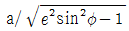
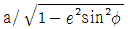
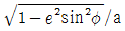
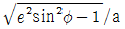
(정답률: 89%)
4. 경도 80° 이상의 양극지역의 좌표를 표시하는데 쓰이며 극심 입체 투영법에 의한 좌표는?
- UPS 좌표
- UTM 좌표
- TM 좌표
- 3차원 직교좌표
(정답률: 93%)
5. 삼각수준측량에 있어서 정밀도를 1/30,000로 제한하면 지구 곡률과 대기굴절을 고려하지 않아도 되는 최대 시준거리는 약 몇m 이내인가? (단, 지구 곡률반경은 6470㎞, 광선의 굴절계수는 0.13임)
- 22m
- 244m
- 488m
- 699m
(정답률: 79%)
6. 지구의 질량을 계산하려면 지구의 반지름, 중력가속도 외에 또 무엇을 알아야 하는가? (단, 지구는 자전하지 않는 완전구체로 간주한다.)
- 지구의 부피
- 지구 원심력의 크기
- 만유인력 상수
- 지구자전 각속도
(정답률: 93%)
7. 다음 중 지구의 자기장 변화에 영향을 주지 않는 것은?
- 부게이상
- 영년변화
- 일변화
- 자기폭풍
(정답률: 100%)
8. 지구의 자장과 거의 일치하는 쌍극자(막대자석)를 지구중심에 위치 시킬 때 쌍극자의 연장선이 지표와 만나는 점을 무엇이라고 하는가?
- 천극
- 지자기극
- 황극
- 적도
(정답률: 82%)
9. 측지선이 두 개의 평면곡선의 교각을 분할할 때 비율로 맞는 것은?
- 1 : 1
- 2 : 1
- 3 : 1
- 4 : 1
(정답률: 100%)
10. 그림에서 지구상의 한점(A)과 지구중심(O) 그리고 적도와 만나는 점(C)이 이루는 위도는?
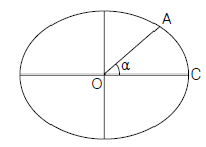
- 지심위도
- 측지위도
- 천문위도
- 화성위도
(정답률: 85%)
11. 연안의 수심측량을 할 때 수평위치결정은 다음 중 어느 방식이 가장 적절한가?
- 원호방식
- 방위선방식
- 쌍곡선방식
- 포물선방식
(정답률: 65%)
12. 중력이상에 대한 설명 중 옳은 것은?
- 실측 중력값과 이론 중력값은 일반적으로 일치하는 경우가 많다.
- 중력이상은 실측 중력값에서 이론 중력값을 뺀 값을 말한다.
- 중력측정은 높이 측정에만 이용된다.
- 프리에어 보정은 지형보정, 고도보정을 한 후 관측점의 위도에 따라 정해지는 표준중력을 뺀 값이다.
(정답률: 94%)
13. 해상의 수평위치 결정 방식이 아닌 것은?
- Echo Sounder
- Raydist
- Omega
- DECCA
(정답률: 100%)
14. GPS의 활용분야와 가장 관계가 먼 것은?
- 측지 측량기준망 설정
- 지각변동 관측
- 지형공간정보 획득 및 시설물 유지관리
- 실내 건축인테리어
(정답률: 100%)
15. GPS 측위의 계통적 오차(정오차) 요인이 아닌 것은?
- 위성의 시계오차
- 위성의 궤도오차
- 전리층 지연오차
- 관측 코드오차
(정답률: 93%)
16. 다음 중 GPS 측량에 있어 기준점 선점시 고려사항과 가장 거리가 먼 것은?
- 전파의 다중경로 발생 예상지점 회피
- 주파단절 예상지점 회피
- 임계 고도각 유지가능 지역 선정
- 인접 기준점과 시통이 잘 되는 지점 선정
(정답률: 39%)
17. 유럽연합에서 상업용으로 개발했으며, 유료부분과 무료부분으로 서비스를 할 예정으로 있는 위성측위시스템은?
- GPS
- GLONASS
- QZSS
- GALILEO
(정답률: 92%)
18. DGPS에서 보정신호 전송 방법 중 해양분야에서 주로 활용되고 있는 방법은 무엇인가?
- 무전기
- 비콘
- FM 통신
- 휴대폰
(정답률: 93%)
19. 기준타원체로부터 지오이드 면까지의 수직거리를 무엇이라 하는 가?
- 지오이드고
- 정표고
- 타원체고
- 동표고
(정답률: 62%)
20. GPS 위성으로부터 전송되는 L1 신호의 주파수는 1575.42MHz이다. 광속 c=299,702,458m/s일 때 L1신호 100,000 파장의 거리는 얼마인가?
- 10230,000 m
- 12276,000 m
- 15754,000 m
- 19029.367 m
(정답률: 84%)
2과목: 응용측량
21. 축척 1/1,000 의 도면을 축척 1/500 으로 잘못 계산하여 10.000m2의 면적을 얻었다. 실제 정확한 값은 얼마인가?
- 250m2
- 2,500m2
- 20,000m2
- 40,000m2
(정답률: 65%)
22. 사변형의 면적을 구하기 위하여 실측한 결과가 아래 그림과 같을 때 사각형의 면적은?
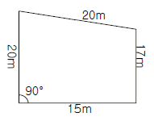
- 169.2m2
- 300.2m2
- 319.3m2
- 469.4m2
(정답률: 84%)
23. 노선측량에서 곡선반지름(R)이 80m인 원곡선에서 PQ의 거리는? (단, AB의 방위 = N 22° 25′ 00″ E, BC의 방위 = S 25° 22′ 00″ E)
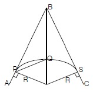
- 87.27m
- 73.15m
- 64.80m
- 53.75m
(정답률: 36%)
24. 그림은 노선측량에서 이용되는 원곡선이다. M 및 M′를 곡선의 중앙종거라 하는데 다음 중 M 과 M′사이에 성립되는 관계는?
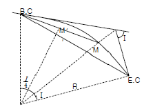
- M은 M′의 약 2배가 된다.
- M은 M′의 약 4배가 된다.
- M은 R의 약 1/3 이 된다.
- M′은 R의 약 1/8 이 된다.
(정답률: 74%)
25. 다음 a∼g는 단곡선을 포함한 노선측량에 있어서 현지에서 실시하는 주요 측량작업을 나열한 것이다. 기준점 측량에서 시작하는 경우의 일반적인 작업공정으로 옳은 것은?
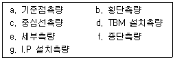
- a→g→c→d→f→d→e
- a→e→g→f→c→d→b
- a→c→d→e→f→g→b
- a→d→c→g→e→b→f
(정답률: 77%)
26. 노선측량의 곡선설치에 대한 설명 중 옳지 않은 것은?
- 단곡선에서 접선장(T.L)과 반지름(R)은 반비례 관계가 있다.
- 2개의 원호가 공통접선의 양측에 있는 곡선은 반향 곡선이다.
- 완화곡선의 곡선반지름은 시점에서 무한대, 종점에서 원곡선의 반지름(R)으로 된다.
- 클로소이드의 형식에는 S형, 복합형, 기본형등이 있다.
(정답률: 8%)
27. 하천흐름의 유속을 측정하기 위하여 수면으로부터 수심의 2/10, 6/10, 8/10 깊이의 지점에서 유속을 측정한 결과 각 각 0.56m/sec, 0.62m/sec, 0.42m/sec이었을 때 이 흐름의 평균유속은?
- 0.533 m/sec
- 0.555 m/sec
- 0.540 m/sec
- 0.5⑤ m/sec
(정답률: 47%)
28. 편각법에 의한 단곡선의 측설에 있어서 그림과 같이, 호의 길이 20m를 현의 길이 20m로 간주하는 경우, δ1과 δ2의 차이는 얼마인가? (단, 단곡선의 반지름(R)은 190m 이다.)
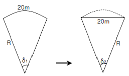
- 약 1″
- 약 5″
- 약 10″
- 약 15″
(정답률: 62%)
29. 하천측량에서 유속관측에 관한 설명으로 적당하지 않은 것은?
- 유속관측은 유속계와 같은 기계관측과 부자(浮子)에 의한 관측 등이 있다.
- 같은 단면내에서는 수심이나 위치에는 상관없이 유속의 분포는 일정하다.
- 유속계의 방법은 주로 평수위시가 좋고 부자의 방법은 홍수시에 많이 이용된다.
- 일반적으로 하천이나 수로의 유속은 기울기, 크기, 수량, 유로의 형태, 풍향 등에 따라 변한다.
(정답률: 85%)
30. 갱내의 고저차 측량에서 두 측점이 천정에 설치되어 있을 때 아래와 같은 결과를 얻었다. 두 점간의 고저차는?
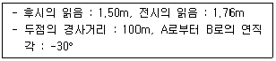
- 35.45m
- 49.74m
- 50.26m
- 57.47m
(정답률: 84%)
31. 다음 중 하천측량을 실시한 후 종단면도를 작성할 때 높이(종), 거리(횡)의 축척으로 알맞은 것은?
- 높이는 1/100, 거리는 1/1000
- 높이는 1/200, 거리는 1/200
- 높이는 1/500, 거리는 1/200
- 높이는 1/500, 거리는 1/500
(정답률: 62%)
32. 터널측량에서 측점에서 측점의 위치가 다음 표와 같을 경우 터널 내 곡선의 교각은 얼마인가?
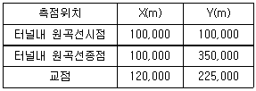
- 18° 10′ 50″
- 28° 15′ 45″
- 48° 10′ 50″
- 71° 50′ 10″
(정답률: 10%)
33. 노선측량 작업에서 중심선 설치를 하는 단계의 측량은?
- 공사측량
- 예비측량
- 조사측량
- 실시설계측량
(정답률: 64%)
34. 경관 평가요인을 정량화하기 위하여 수평시각을 관측한 결과 30° ≤ θ ≤ 60° 의 값을 얻었다. 시설물에 대한 느낌으로 적절한 것은?
- 시설물은 주위와 일체가 되고 경관의 주제로서 대상에서 벗어 난다.
- 시설물의 전체 형상을 인식할 수 있고 경관의 주제로 적합하다.
- 시설물이 시계 중에 차지하는 비율이 크고 강조된 경관으로 인식된다.
- 시설물에 대한 압박감을 느낀다.
(정답률: 65%)
35. 전자파의 반사 성질을 이용하여 지하의 각종 현상을 밝히는 측량방법은?
- 지중 레이다 측량기법
- 전자유도 측량기법
- 음파측량기법
- GPS 측량기법
(정답률: 65%)
36. 터널측량에 대한 설명 중 틀린 것은?
- 갱외측량, 갱내측량, 갱내외 연결측량으로 구분한다.
- 갱내측량시 조명이 달린 표척과 레벨이 필요하다.
- 갱내 중심선측량시 도벨이라는 기준점을 설치한다.
- 갱내의 곡선설치시 편각현장법을 사용한다.
(정답률: 77%)
37. 그림과 같은 삼각형을 A로부터 밑변을 향해 a:b:c=6:2:2의 비율로 면적을 분할하려면 BP와 PQ는 각각 얼마로 해야 하는가? (단, BC= 100m임)
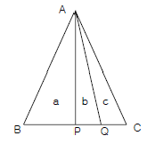
- 70m, 25m
- 60m, 25m
- 75m, 20m
- 60m, 20m
(정답률: 70%)
38. 지적측량 중에서 도시계획, 농지개량 등에 의해 토지를 구획하기 위해 실시되는 측량으로 세부측량에서도 정확하게 실시되는 측량은?
- 지적 확정 측량
- 경계 정정 측량
- 경계 감정 측량
- 분할 측량
(정답률: 84%)
39. 도형이 곡선으로 둘러 쌓여 있는 부분의 면적계산은 다음 중 어느 방법이 가장 적당한가?
- 배횡거법에 의한 방법
- 좌표에 의한 방법
- 모눈종이에 의한 방법
- 두변과 그 협각에 의한 방법
(정답률: 69%)
40. 하천측량에 대한 설명으로 맞지 않는 것은?
- 하천의 만곡부의 수면경사를 측정할 때 측점은 반드시 양안에서 하고 그 평균을 가장 중심의 수면으로 본다.
- 하천 횡단면 직선내 평균 유속을 구하는데 2점법을 사용하는 경우 수면으로부터 수심의 2/10, 8/10점의 유속을 측정 평균 한다.
- 하천측량에 수준측량을 할 때의 거리표는 하천의 중심에 직각의 방향으로 설치하는 것을 원칙으로 한다.
- 수위관측소의 위치는 지천의 합류점 및 분류점으로 수위의 변화가 일어나기 쉬운 곳이 적당하다.
(정답률: 75%)
3과목: 사진측량 및 원격탐사
41. 다음 중 사진측량의 특징과 관계가 없는 것은?
- 정략적 및 정성적인 해석이 가능하다.
- 4차원측량이 가능하다.
- 실내작업보다 현장작업이 많다.
- 정확도의 균일성이 있다.
(정답률: 69%)
42. 촬영고도 3000m에서 촬영한 항공사진의 축척이 1/20,000 이면 이 사진의 초점 거리는 얼마인가?
- 9㎝
- 15㎝
- 21㎝
- 25㎝
(정답률: 75%)
43. 동서 20㎞, 남북 10㎞의 장방형 지역을 촬영할 때 한 모형의피 복면적이 20km2 일 때 소요되는 사진 매수는? (단, 안전율은 30% 임)
- 10매
- 13매
- 20매
- 7매
(정답률: 75%)
44. 평탄한 지형이 촬영된 연직사진에서 촬영에 사용한 카메라의 초점거리가 150㎜, 사진크기 23㎝×23㎝, 종중복도 60%인 경우의 기선고도비는 얼마인가? (단, 이 경우 사진의 축척은 1/10,000이다.)
- 0.61
- 0.38
- 0.92
- 1.04
(정답률: 8%)
45. 회전주기가 일정한 인공위성에 의한 원격탐사의 일반적인 특징이 아닌 것은?
- 넓은 지역을 단시간에 관측할 수 있다.
- 원하는 위치 및 시기 지정이 용이하다.
- 반복 관측이 가능하다.
- 얻어진 영상은 정사투영에 가깝다.
(정답률: 79%)
46. 지상사진측량에서 양사진기의 촬영축을 촬영기선에 대하여 어느 각도만큼 내측으로 향해 촬영하는 방법으로 높은 정확도를 얻을 수 있는 촬영방법은?
- 직각수평촬영법
- 직각경사촬영법
- 편각수평촬영법
- 수렴수평촬영법
(정답률: 74%)
47. 영상분류(image classification)에서 감독분류(supervised classification)기법을 위해 필수적인 사항은?
- 표본영상 자료
- 좌표변환식
- 지상측량 성과
- 수치지도
(정답률: 7%)
48. 항공사진 측량의 판독에 대한 설명으로 틀린 것은?
- 사진상의 크기나 형상은 피사체의 내용을 판독하기 위한 주요한 요소이다.
- 사진상의 음영은 촬영고도에 의하여 변하기 때문에 판독에 주요한 요소가 될 수 없다.
- 사진상의 질감은 사진의 크기, 색조, 형상 등의 제요소가 조합되어 성립한다.
- 사진상의 형태(패턴)에는 인위적인 것과 자연적인 것이 있다.
(정답률: 82%)
49. 항공사진 도화작업에서 표정(orientation)에 관한 설명으로 틀린것은?
- 내부표정 - 초점거리의 조정 및 주점을 일치
- 상호표정 - 7개의 표정인자(λ, φ, Ω, Κ, CX, CY, CZ)
- 절대표정 - 축척, 경사의 조정 및 위치의 결정
- 접합표정 - 모델간, Strip간의 접합요소
(정답률: 77%)
50. 항공삼각측량시 평면기준점의 배치가 그림과 같을 경우 다음 중 가장 큰 잔차가 남는 지점은?
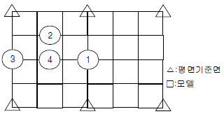
- ①
- ②
- ③
- ④
(정답률: 70%)
51. 촬영시 사진기의 경사, 지표면의 비고를 수정하였을 뿐만 아니라 등고선의 삽입된 사진지도는?
- 중심투영 사진지도
- 정사투영 사진지도
- 조정집성 사진지도
- 약집성 사진지도
(정답률: 50%)
52. 평탄지를 촬영고도 1500m로 촬영한 연직사진이 있다. 두 사진상에서 2점간의 시차차를 측정하니 4㎜이었다면 이 두 점간의 비고는? (단, 카메라의 초점거리는 153㎜, 사진의 크기 23㎝ × 23㎝, 종중복도 60%임)
- 19.6m
- 32.6m
- 39.2m
- 65.2m
(정답률: 15%)
53. 벡터 자료와 비교할 때 래스터 자료에 대한 설명으로 옳지 않은 것은?
- 자료 구조가 단순하다.
- 위상구조로 표현하기 힘들다.
- 스캐닝한 자료는 래스터 구조이다.
- 객체를 점, 선, 면의 형태로 구분하기 쉽다.
(정답률: 22%)
54. 기계적인 상호표정을 수행함에 있어서 사용되는 표정점은 무엇인가?
- 삼각점
- 수준점
- 종집합점
- 횡접합점
(정답률: 75%)
55. 수치지도의 등고선 레이어를 사용하여 수치지형모델을 생성할 경우 필요한 자료처리 방법은?
- 보간법
- 일반화 기법
- 분류법
- 자료압축법
(정답률: 85%)
56. GIS 시스템이 CAD 시스템과 차별화 되는 요인은?
- 대용량의 그래픽 정보를 다룬다.
- 위상구조를 바탕으로 공간분석 능력을 갖추었다.
- 필요한 도형정보만을 추출할 수 있다.
- 다양한 축척으로 자료를 출력할 수 있다.
(정답률: 59%)
57. GIS에서 많이 사용되는 관계형 데이터베이스 모형의 장점에 해당되지 않는 것은?
- 정보를 추출하기 위한 질의의 형태에 제한이 없다.
- 모형 구성이 단순하고 이해가 빠르다.
- 테이블의 구성이 자유롭다.
- 테이블의 수가 상대적으로 적어 저장 용량을 상대적으로 적게 차지한다.
(정답률: 83%)
58. 표정기준점 측량의 일반적인 필요(소요)정확도로 옳은 것은? (단, M0는 도화축척분모수, △h는 최소등고간격)
- 수평위치 표정기준점의 소요정확도 : 0.5 √M0 (cm), 수직위치 표정기준점의 소요정확도 : 10△h (cm)
- 수평위치 표정기준점의 소요정확도 : 0.1 √M0 (cm), 수직위치 표정기준점의 소요정확도 : 50△h (cm)
- 수평위치 표정기준점의 소요정확도 : 0.1 √M0 (cm), 수평위치 표정기준점의 소요정확도 : 10△h (cm)
- 수평위치 표정기준점의 소요정확도 : 0.5 √M0 (cm), 수평위치 표정기준점의 소요정확도 : 50△h (cm)
(정답률: 37%)
59. 도형자료의 점, 선, 면, 위치 등에 대하여 양이나 크기와 관계없이 형상이나 공간적 위치 관계를 규정하는 것을 무엇이라고 하는가?
- 위상설정
- 위치설정
- 종속설정
- 도형설정
(정답률: 50%)
60. 다음 그림은 래스터 영상의 화소를 표현한 것이다. 색으로 칠한 부분의 면적(A), 둘레길이(P), 블록지수(CI, Convexity Index)는 각각 얼마인가? (여기서, 관계상수 (k)는 10으로 정하고, 화소 한변의 길이는 1이다.)
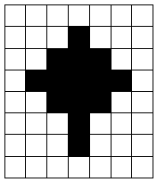
- A=13, P=19, CI=38.22
- A=13, P=19, CI=14.29
- A=14, P=22, CI=23.54
- A=14, P=22, CI=15.71
(정답률: 77%)
4과목: 지리정보시스템
61. 어떤 길이를 10회 관측한 결과 평균제곱오차(중등오차)가 ±8.0㎝이었다. 같은 방법으로 관측하여 평균제곱오차를 ±4.0㎝로 하려면 몇 회 관측해야 하는가?
- 20회
- 40회
- 60회
- 80회
(정답률: 65%)
62. 레벨을 점검하기 위해 그림과 같이 C점에 설치하여 A, B 양표척의 값을 읽었다. 그리고 레벨을 B, A 연장선상의 D점에 세우고 A, B 양 표척의 값을 읽었다면 이 점검은 무엇을 알아보기 위한 것인가?
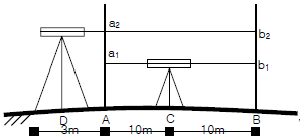
- 시준선과 연직선이 직교하는지의 여부
- 기포관측과 연직축이 수평한지의 여부
- 시준선과 기포관측이 직교하는지의 여부
- 시준선과 기포관측이 수평한지의 여부
(정답률: 44%)
63. 실제 31° 46′ 08″ 인 각을 1분까지 읽을 수 있는 트랜싯을 써서 6회의 반복법으로 관측했을 때의 결과값은? (단, 기계 및 관측오차는 없는 것으로 가정한다.)
- 31° 46′ 08″
- 31° 46′ 10″
- 31° 46′ 20″
- 31° 46′ 48″
(정답률: 42%)
64. 오차 중 원인 불명으로 주의하여도 제거할 수 없는 것은?
- 과대오차
- 우연오차
- 착오
- 정오차
(정답률: 87%)
65. 길이 50m인 줄자를 사용하여 1250m를 측정할 경우 50m에 대한 측거 오차가 ±5㎜ 라면 전체에서 발생하는 오차는 얼마인가?
- ±10 ㎜
- ±20 ㎜
- ±25 ㎜
- ±30 ㎜
(정답률: 16%)
66. 다음 중 전자파 거리측량기에서 거리에 비례하는 오차와 관계없는 것은?
- 광속도 오차
- 위상차 오차
- 굴절률의 오차
- 광변조 주파수의 오차
(정답률: 67%)
67. 강 주변의 표고를 결정하기 위하여 교호수준측량을 실시하여 다음 결과를 얻었다. A점의 표고가 56.867m 일 때 B점의 표고는? (단, a1=1.465m, a2=0.308m, b1=3.274m, b2=1.047m)
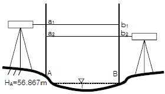
- 55.583m
- 55.593m
- 58.141m
- 58.131m
(정답률: 72%)
68. 감도 20″인 레벨로 기포 눈금(2㎜)움직인 상태로 60m거리의 표척을 읽었을 때 생기는 오차는 얼마인가?
- 약 12㎜
- 약 9㎜
- 약 8㎜
- 약 6㎜
(정답률: 17%)
69. 수준측량의 관측치로부터 표고계산을 한 결과이다. 각 측점의 표고 중 틀리게 계산된 것은 어느 측점인가? (단, 측점 No.1의 표고는 10,000m 임)
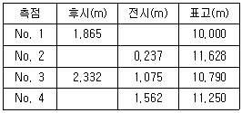
- No.1
- No.2
- No.3
- No.4
(정답률: 56%)
70. 삼각측량의 성과표 내용을 열거한 것 중 성과표에 포함되지 않은 내용은?
- 삼각점의 등급
- 삼각점의 표고
- 위거, 경거
- 좌표 원점
(정답률: 75%)
71. 삼각망 중에서 가장 정확도가 높은 망은?
- 유심 삼각망
- 사변형 삼각망
- 단열 삼각망
- 망의 종류와 정확도는 무관하다.
(정답률: 77%)
72. 삼변측량에 의하여 그림과 같은 삼각형의 3변 a, b, c를 측정하였다. ∠A의 값은? (단, a=10㎞, b=18㎞, c=15㎞)
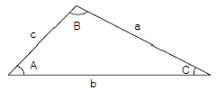
- 33° 42′
- 33° 43′
- 33° 44′
- 33° 45′
(정답률: 16%)
73. 1/50,000 축척의 지형도를 1/25,000 축척의 지형도로부터 편집하였다면 여기에 사용한 방식은?
- 확대방식
- 축소방식
- 확대방식과 축소방식을 겸용
- 좌표방식
(정답률: 67%)
74. A점은 20m의 등고선상에 있고 B점은 30m의 등고선상에 있다. 이때 AB의 경사가 20%이면 AB의 수평거리는 얼마인가?
- 30m
- 40m
- 50m
- 60m
(정답률: 27%)
75. 한 측점에서 6개의 방향선 사이의 각을 각관측법(조합각 관측법)으로 관측하였다. 이때 총 각관측수는?
- 20
- 15
- 10
- 5
(정답률: 22%)
76. 다음 경중률에 관한 설명 중 틀린 것은?
- 경중률은 관측횟수에 비례한다.
- 경중률은 노선거리에 반비례한다.
- 경중률은 확률오차의 제곱에 비례한다.
- 경중률은 확률오차의 제곱에 반비례한다.
(정답률: 17%)
77. 트랜싯의 기계오차를 없앨 수 있는 방법에 대한 설명으로 옳지 않은 것은?
- 시준축 오차는 망원경을 정ㆍ반으로 관측햐여 평균한다.
- 연직축 오차는 망원경을 정ㆍ반으로 관측하여 평균한다.
- 수평축 오차는 망원경을 정ㆍ반으로 관측하여 평균한다.
- 시준축 편심오차는 망원경을 정ㆍ반으로 관측하여 평균한다.
(정답률: 72%)
78. 도면 축척이 1/50,000인 인 지형도의 간곡선 간격은 얼마인가?
- 1m
- 2.5m
- 5m
- 10m
(정답률: 47%)
79. 삼각측량에서 1, 2, 3, 4등 삼각점 또는 기설의 기준삼각점으로부터 실시한 기준삼각측량의 기준삼각점간 거리는 약 얼마 정도를 표준으로 하는가?
- 10㎞
- 1.5㎞
- 500m
- 200m
(정답률: 59%)
80. 어떤 다각형의 전 측선의 길이가 500m일 때 폐합비를 1/5,000으로 하기 위해서는 1/500 의 도면에서 폐합오차는 얼마까지 허용되는가?
- 0.2㎜
- 0.4㎜
- 0.1㎜
- 0.6㎜
(정답률: 8%)
5과목: 측량학
81. 다음 측량표 중 일반표지는?
- 측표
- 기선표석
- 검조의
- 방위표석
(정답률: 67%)
82. 영구표지 및 일시표지에 표시할 사항이 아닌 것은?
- 측량자의 성명
- 관리자의 성명
- 기본측량 또는 공공측량의 측량표임을 명시
- 설치자의 성명
(정답률: 59%)
83. 기본측량을 위하여 설치된 측량표의 이전에 관한 사항으로 옳은 것은?
- 측량표의 이전은 전혀 불가능하다.
- 상당한 이유가 있는 경우에 이전이 가능하며 비용은 신청자가 부담한다.
- 상당한 이유가 있는 경우에 이전이 가능하며 비용은 국가가 부담한다.
- 임의로 이전하고 그 결과를 건설교통부장관에게 통보하면 된다.
(정답률: 77%)
84. 국토지리정보원장이 행하는 지도의 심사 사항이 아닌 것은?
- 지형 ㆍ 지물의 표시
- 주기의 표시
- 기호의 표시
- 측량표의 표시
(정답률: 64%)
85. 다음 중 관할구역의 일시표지의 현황을 조사하는 자는?
- 군수
- 국토지리정보원장
- 경찰서장
- 국토관리청장
(정답률: 0%)
86. 기본측량의 실시 공고자는?
- 건설교통부장관
- 국토지리정보원장
- 서울특별시장, 광역시장 또는 도지사
- 시장 또는 군수
(정답률: 36%)
87. 다음 중 삼각점 표석의 표주 상단에 표시되어 있는 기호는?
- 원(○)
- 십자(＋)
- 삼각형(△)
- 점(•)
(정답률: 73%)
88. 지형도상에 표시하는 사항 중 바다와 접하는 해안수애선 표시는 어느 시기를 기준으로 하는가?
- 간조시의 수애선
- 만조시의 수애선
- 평균 해수면의 수애선
- 측량당시의 수애선
(정답률: 56%)
89. 측량업을 폐업한 때에는 측량업자이었던 개인은 그 사유가 발생한 날로부터 최대 며칠 이내에 신고하여야 하는가?
- 사유가 발생한 날로부터 10일이내
- 사유가 발생한 날의 다음 날부터 20일이내
- 사유가 발생한 날로부터 30일이내
- 사유가 발생한 날의 다음 날로부터 40일이내
(정답률: 70%)
90. 심사를 받지 않고 지도등을 발매 또는 배포한 자에 대한 벌칙으로 옳은 것은?
- 2년이하의 징역 또는 2000만원이하의 벌금에 처한다.
- 1년이하의 징역 또는 1000만원이하의 벌금에 처한다.
- 200만원이하의 과태료에 처한다.
- 200만원이하의 벌금에 처한다.
(정답률: 50%)
91. 측지측량업의 등록기준 중 기술능력에 관한 사항으로 옳은 것은?
- 특급기술자 1인 이상, 고급기술자 1인 이상, 중급기술자 2인 이상, 초급기술자 2인 이상, 측량분야의 초급기능사 2인 이상
- 고급기술자 1인 이상, 중급기술자 2인 이상, 초급기술자 2인 이상, 측량분야의 초급기능사 1인 이상
- 고급기술자 1인 이상, 측량분야의 초급기능사 1인 이상
- 고급기술자 1인 이상, 중급기술자 1인 이상, 초급기술자 2인 이상, 측량분야의 초급 기능사 2인 이상
(정답률: 63%)
92. 기본측량 및 공공측량에 대한 측량용역대가에 대한 설명으로 옳은 것은?
- 측량용역대가의 기준을 정한 때에는 관보에 고시하지 않음을 원칙으로 한다.
- 측량용역대가의 기준은 건설교통부장관이 정한다.
- 측량용역대가의 산정방법은 건설교통부령으로 정한다.
- 측량용역대가의 산정은 직접측량비만을 구한다.
(정답률: 60%)
93. 다음 중 공공측량으로 지정할 수 있는 일반측량은?
- 측량노선의 길이가 1㎞ 이상인 다각측량
- 촬영지역의 면적이 1km2 이상인 측량용 사진의 촬영
- 측량노선의 길이가 5㎞ 이상인 수준측량
- 측량지역의 면적이 500m2 이상인 삼각측량
(정답률: 29%)
94. 건설교통부장관 또는 국토지리정보원장의 권한을 협회 또는 규정에 의하여 허가를 받아 설립된 인력과 장비를 갖춘 기간에 위탁할 수 있는 업무로 옳은 것은?
- 측량기술경력증발급 및 기본측량 심사
- 기본측량 심사 및 공공측량 심사
- 기본측량 심사 및 지도의 심사
- 공공측량 심사 및 지도의 심사
(정답률: 56%)
95. 다음 중 수수료 징수사항이 아닌 것은?
- 지도등의 심사 신청
- 측량업의 등록증 및 등록수첩의 재교부 신청
- 측량성과 또는 측량기록의 열람
- 측량성과의 국외반출 허가신청
(정답률: 82%)
96. 측량의 기준이 되는 세계측지계, 회전타원체 및 측량의 원점값의 결정 등에 관하여 필요한 세부사항은 무엇으로 정하는가?
- 대통령령
- 국무총리령
- 건설교통부령
- 국토지리정보원 내규
(정답률: 65%)
97. 다음 중 지명고시 사항에 포함되지 아니하는 것은?
- 제정 또는 변경된 지명
- 재 ㆍ 개정된 연월일
- 소재지(행정구역으로 표시)
- 위치(경도 및 위도로 표시)
(정답률: 79%)
98. 다음 중 과태료 부과사항이 아닌 것은?
- 부정한 방법으로 성능검사를 받은 자
- 성능검사를 받지 아니한 측량기기를 사용하여 측량을 한 자
- 정당한 사유 없이 측량의 실시를 방해한 자
- 등록을 하지 아니하고 성능검사를 대행한 자
(정답률: 34%)
99. 기본측량과 공공측량의 측량기준 중 회전타원체면상의 값으로 표시하는 것은?
- 거리와 면적
- 지구의 형상
- 위치
- 측량의 원점
(정답률: 62%)
100. 우리나라 축척 1:50,000 지형도의 투영 방법은?
- T.M 도법
- U.T.M 도법
- Gauss-Krüger 도법
- Bessel 도법
(정답률: 67%)